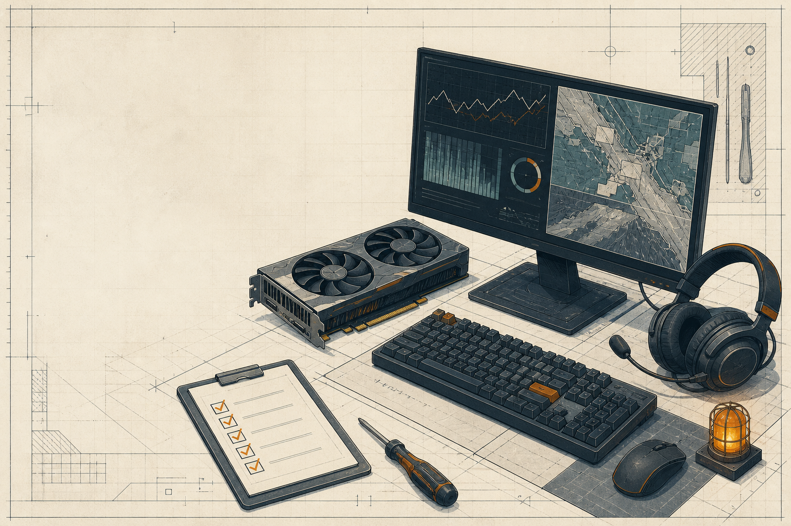

GUIDE 03 / VERIFIED SETUP
Check the machine
before blaming the match.
These figures are transcribed from the current Steam listing. Requirements can change; use the source link at the bottom as the final authority.

- OS Windows 10 64 bit
- CPU Intel Core i3-4150 / AMD FX-6300
- MEMORY 8 GB RAM
- GPU GTX 660 / HD 7870 / Intel Arc A380
- DIRECTX Version 12
- STORAGE 88 GB available space
- OS Windows 10 64 bit
- CPU Intel Core i5-6500 / Ryzen 5 1500X
- MEMORY 16 GB RAM
- GPU GTX 1060 5G / RX5500 XT / Intel Arc A580
- DIRECTX Version 12
- STORAGE 88 GB available space
PRE-LAUNCH CHECK
Four clean checks.
- Update the graphics driver and restart.
- Confirm the game has the listed storage headroom.
- Test one match on the current network before changing multiple variables.
- Record what changed when the issue disappears.
Primary reference: Steam listing / System Requirements ↗